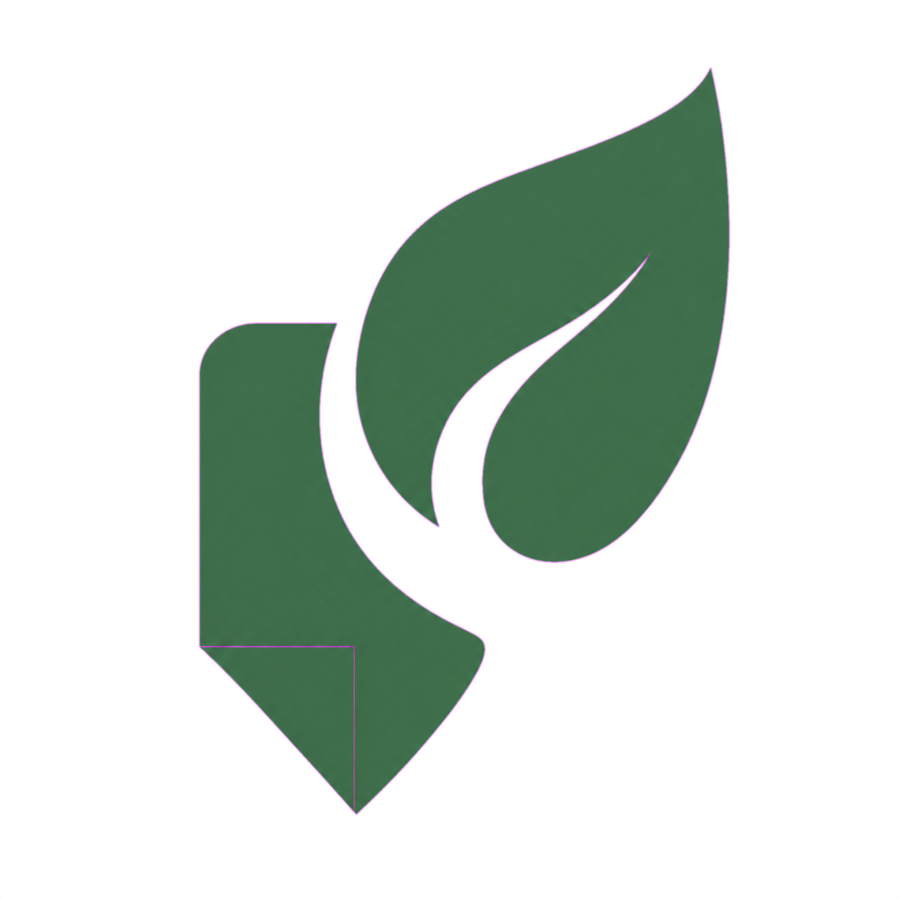
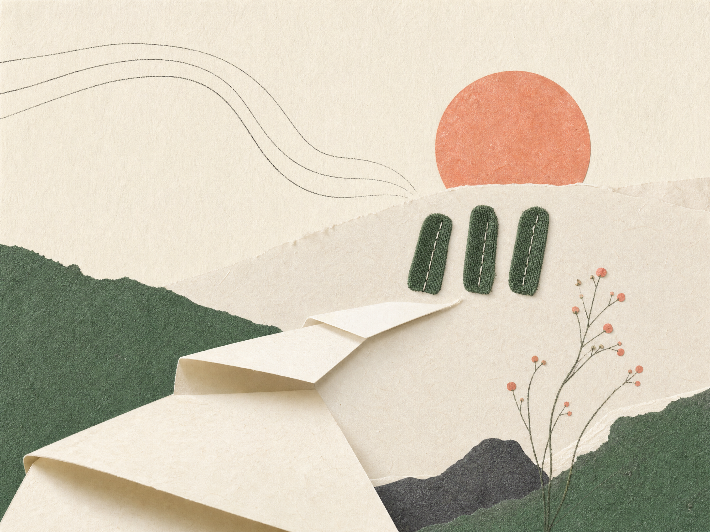
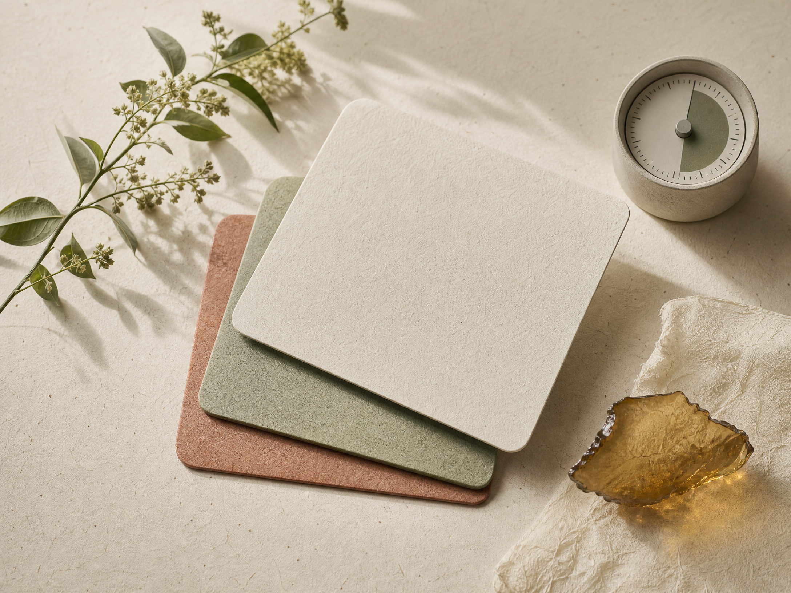

상태를 남깁니다
정확한 감정 이름이 아니어도 됩니다. 지금의 몸과 마음을 가장 가까운 문장으로 표현합니다.

온·기록AI RECOVERY ROUTINE · 2026
온기록은 지금의 컨디션과 확보한 시간을 바탕으로, 부담 없이 시작할 수 있는 회복 루틴의 초안을 함께 만듭니다.
의료·심리 진단 서비스가 아닙니다. 일상에서 시도할 수 있는 작은 행동을 제안합니다.
TODAY’S DRAFT
정답을 찾기보다, 오늘 실제로 해볼 수 있는 선택을 남겨 주세요. 1분 안에 맞춤 루틴을 제안합니다.
FROM WORDS TO A ROUTINE
온기록은 사용자가 남긴 상태, 시간, 원하는 감각을 참고해 단계를 제안합니다. 정보는 루틴 생성 목적으로만 전송되며, 비밀 키는 브라우저가 아닌 서버 환경 변수에서 관리합니다.
정확한 감정 이름이 아니어도 됩니다. 지금의 몸과 마음을 가장 가까운 문장으로 표현합니다.

확보한 시간과 선택한 방향을 기준으로 과장 없이 실행할 수 있는 3단계 초안을 구성합니다.
제안은 초안입니다. 마음에 드는 한 단계만 선택해도 오늘의 기록은 충분히 시작됩니다.
A QUIET TOOL FOR DAILY RECOVERY
온기록은 바쁜 학습자와 일하는 사람이 자신의 상태를 짧게 점검하고, 바로 해볼 수 있는 행동으로 바꾸도록 돕는 AI 웹 서비스입니다.
